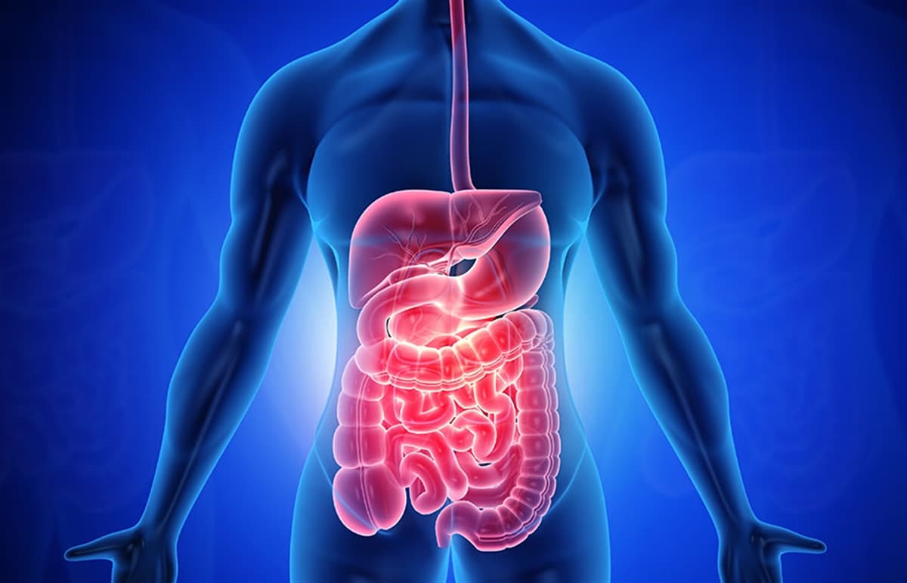

Sindirim Sistemi
Sindirim sistemi, alınan besinleri mekanik ve kimyasal sindirim yoluyla daha küçük parçalara ayırarak vücudun kullanabileceği hale getirir.
Sindirim sonucu oluşan besin yapı taşları kana geçerek hücrelere taşınır ve enerji üretiminde kullanılır.
Sindirim Sisteminin Yapıları
Sindirim sistemi; ağız, yemek borusu, mide, ince bağırsak ve kalın bağırsaktan oluşur. Yardımcı organlar ise karaciğer, pankreas ve tükürük bezleridir.
Görevleri
- Besinleri küçük parçalara ayırmak
- Besinlerin kana geçmesini sağlamak
- Vücuda enerji ve yapı taşı kazandırmak
- Artık maddelerin vücuttan atılmasına yardımcı olmak
Sindirim Sisteminin Önemi
Sindirim sistemi olmadan besinlerden enerji elde edilemez. Bu nedenle sindirim sistemi, büyüme, gelişme ve sağlıklı yaşam için hayati öneme sahiptir.
Sindirim Organları ve Görevleri (Özet Tablo)
| Organ | Görevi |
|---|---|
| Ağız | Besinlerin çiğnenmesi ve sindirimin başlaması |
| Mide | Besinlerin kimyasal sindirimi |
| İnce Bağırsak | Sindirimin tamamlanması ve emilim |
| Kalın Bağırsak | Su emilimi ve atıkların dışkı haline gelmesi |
Sık Sorulan Sorular
Sindirim neden gereklidir?
Besinlerin hücreler tarafından kullanılabilmesi için sindirilmesi gerekir.
Sindirim nerede tamamlanır?
Sindirim büyük oranda ince bağırsakta tamamlanır.
Kısa Özet
Sindirim sistemi, besinleri vücut için faydalı hale getirir. Enerji üretimi ve sağlıklı yaşam için vazgeçilmezdir.
← Ana Sayfaya Dön